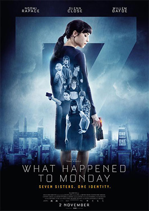

✰ Mijn hobbies ✰


✦ Mijn hobbies zijn muziek luisteren, films kijken en afspreken met vriendinnen. ✦
Als ik me verveel spreek ik af met mijn vriendinnen en gaan wij bijvoorbeeld uiteten of naar de bioscoop.
Soms luister ik ook muziek, maar dat doe ik meer als ik druk met iets bezig ben.
| Top 3 favoriete films | |
|---|---|
| Top 1 | The Kidnap |
| Top 2 | What happened to Monday? |
| Top 3 | Taken 3 |
| Top 3 favoriete liedjes | |
|---|---|
| Top 1 | Sorry not Sorry - Demi Lovato |
| Top 2 | The Middle - Maren Morris |
| Top 3 | Down - Fifth Harmony |
- ✦ Een aantal van mijn lievelingsdingen ✦;
- Mijn lievelingskleur:
- Blauw
- Mijn lievelingseten:
- Sushi & pizza
- Mijn lievelingsfilm:
- Kidnap
- Mijn lievelingsdier:
- Een panda
© Gemaakt door Ouafa Bouda // 2018